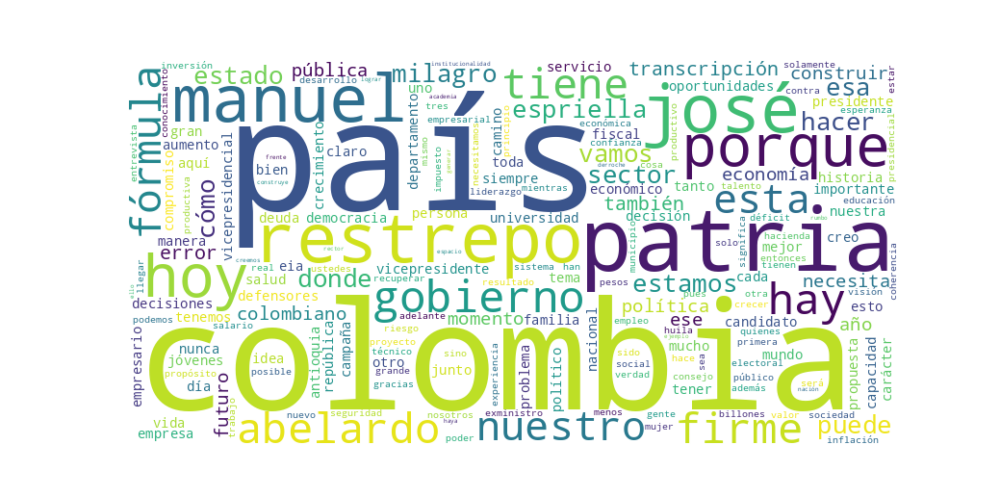

Seguidores: 130,328
Candidato: Abelardo de la Espriella / José Manuel Restrepo (Fórmula Presidencial) Plataforma Analizada: Instagram (Corpus de publicaciones)
El discurso del candidato y su fórmula vicepresidencial se estructura en un estilo híbrido, combinando un registro formal y técnico en el análisis de políticas públicas (especialmente en economía y finanzas) con un tono cercano y emotivo cuando se dirige a la base electoral. Utiliza un lenguaje accesible y popular para explicar problemas complejos (ej. "destrozar las finanzas públicas", "matar el hambre"), pero también recurre a tecnicismos propios del ámbito económico-académico ("déficit fiscal", "balanza comercial", "productividad"). La comunicación busca proyectar autoridad experta (apelando a trayectorias en sector público y academia) y al mismo tiempo empatía y conexión emocional con frases como "Firme por la patria" o apelando a la familia y los valores. Se presenta como un "outsider" que no pertenece a la "política tradicional", pero con experiencia de gobierno.
El tono general es crítico, confrontacional y de urgencia apocalíptica. Se describe la situación actual del país como un "abismo", una "debacle", un riesgo de destrucción de la democracia y las instituciones. Este diagnóstico catastrófico sirve de contraste para un mensaje esperanzador y redentor hacia el futuro: la "Patria Milagro". El discurso oscila entre la denuncia severa del gobierno rival y un optimismo propositivo sobre lo que se puede lograr con "carácter", "decisión" y "buena gerencia". Hay un fuerte componente emocional y patriótico, apelando al amor por Colombia y la necesidad de un "rescate".
La estrategia de comunicación busca movilizar a un electorado de centro-derecha y conservador, desencantado con la gestión económica y de seguridad del gobierno actual, y alarmado por un posible giro hacia un populismo de izquierda radical. Combina un discurso técnico y de autoridad (para validarse ante élites y votantes moderados preocupados por la economía) con un relato emocional y valórico (para conectar con las bases y activar el voto en temas como familia, seguridad y orden). El mensaje central es salvífico y de restauración: se ofrece un regreso a la "sensatez", la "institucionalidad" y la "buena gerencia", presentando la elección como un plebiscito binario entre el "abismo" y el "milagro". Se apela al miedo (al caos económico, a la inseguridad, a la pérdida de libertades) y a la esperanza (en un futuro próspero y ordenado), buscando evocar un sentimiento de urgencia patriótica que justifique un voto de "carácter" y no de "tibieza". La fórmula busca capitalizar el descontento y posicionarse como la única opción "coherente" y con "experiencia" capaz de evitar el supuesto desastre que representaría la continuidad del proyecto político oficialista.
1. Resumen del Patrón de Éxito: Los videos más exitosos del candidato se estructuran sobre un poderoso dualismo emocional e intelectual. La fórmula combina una crítica apasionada y confrontacional al gobierno actual y sus aliados, enmarcada como una amenaza existencial para la democracia y la nación, con una oferta de salvación basada en un lenguaje técnico-gerencial ("buena gerencia", "subsidiariedad", "principios no negociables"). No es solo emoción o solo datos; es la unión de un pathos de urgencia nacional con un ethos de competencia administrativa. El éxito reside en presentarse como el único baluarte técnicamente capacitado y con carácter suficiente para evitar un "abismo" y construir una "Patria Milagro".
2. Tácticas de Comunicación Clave: * Construcción de un "Momento Histórico" Binario: Define la coyuntura como un punto de inflexión único y peligroso. Presenta dos únicos caminos: el "abismo" de la destrucción nacional (asociado a sus opositores) y la "Patria Miligro" de la recuperación (su propuesta). Esto elimina matices, fuerza una elección y genera una sensación de urgencia irrenunciable. * Defensa Agresiva de las Instituciones (vs. Ataque a Opositores): Se posiciona como el garante de las instituciones democráticas (Consejo de Estado, Banco de la República, medios) que, según él, están siendo atacadas por el gobierno de Petro. Esta táctica es astuta: le permite atacar a sus rivales (acusándolos de ser una amenaza antidemocrática) mientras se viste a sí mismo de defensor del orden y el Estado de Derecho. * Lenguaje Gerencial como Solución: Ante el diagnóstico de crisis, la respuesta no es puramente ideológica, sino de gestión. Repite como mantras "buena gerencia pública", "experiencia de sobra en gerencia", "principio de subsidiariedad" y "modelo económico" pragmático. Esto apela a un electorado cansado del conflicto y deseoso de soluciones prácticas y eficientes, construyendo una imagen de seriedad y capacidad ejecutiva. * Llamado a la Unión desde una Narrativa de División Superada: En eventos masivos (como el de Cali), enfatiza actos simbólicos de unión ("donde nos intentaron dividir, hoy venimos a unir"). Transforma la participación en una "fiesta democrática", creando una sensación de comunidad y movimiento positivo alrededor de su figura, en contraste con el discurso de división que atribuye al rival.
3. Temas de Mayor Resonancia: 1. Defensa de la Democracia e Instituciones: Presentado como un frente contra un proyecto "constituyente" y "destructor". 2. Crítica a la "Mala Gerencia" del Gobierno Actual: Especialmente en salud, burocracia y manejo de empresas estatales (Ecopetrol). 3. Oferta de un Modelo Económico Técnico-Pragmático: Con la frase "tanto estado como sea necesario, tanto sector privado como sea posible". 4. Denuncia de Prácticas Sucias: Acusaciones de "chuzadas ilegales", "intimidación" y falta de "juego limpio" por parte de sus adversarios.
4. Perfil de la Audiencia Implícita: El discurso apunta a un perfil dual. Primero, a la base electoral tradicional de centro-derecha y derecha, preocupada por la estabilidad institucional y económica, que se siente amenazada por el gobierno de Petro y anhela un liderazgo firme y con experiencia de gestión. Segundo, busca conectar con votantes indecisos o desencantados del centro, ofreciéndoles un puente ("construir en la diferencia") y una alternativa que evita etiquetas ideológicas clásicas, reemplazándolas por el lenguaje aparentemente neutro de la "gerencia" y la "eficiencia". El tono es formal y grandilocuente, menos orientado a un público joven puro y más a un espectro adulto con conciencia cívica y económica.
5. Conclusión Estratégica: La potencia fundamental de su discurso radica en la hibridación del lenguaje del conflicto político con el lenguaje de la administración de empresas. Mientras sus adversarios pueden ser encasillados en la polarización ideológica (izquierda vs. derecha), él se mueve a un terreno aparentemente suprapartidista: la gerencia versus el caos. Su poder no es solo confrontar, sino presentar la confrontación como un deber técnico y patriótico. Lo diferencia del discurso político tradicional porque desplaza el debate desde las promesas de bienestar social o las consignas ideológicas hacia una promesa de competencia y orden, envasada en una narrativa épica de salvación nacional. Es un discurso que combina el miedo a la destrucción con la esperanza en un "milagro" ejecutado por técnicos con carácter.

Caption: Con @delaespriella_style estamos comprometidos en recuperar la buena gerencia pública en @delaespriella_style La buena gerencia pública siempre da réditos en beneficio de la política social y del desarrollo del país. El 7 de agosto de 2026 arranca la recuperación de nuestro activo más valioso y patrimonio de colombia 🇨🇴 y de cientos de miles de familias en el país bajo la conducción de una dupla presidencial y vicepresidencial que tiene experiencia de sobra en gerencia
Likes: 10,889 | Comentarios: 380 | Reproducciones: 55,859
Ver en InstagramCaption: Con @delaespriella_style estamos comprometidos en recuperar la buena gerencia pública en @ECOPETROL_SA La buena gerencia pública siempre da réditos en beneficio de la política social y del desarrollo del país. El 7 de agosto de 2026 arranca la recuperación de nuestro activo más valioso y patrimonio de colombia 🇨🇴 y de cientos de miles de familias en el país bajo la conducción de una dupla presidencial y vicepresidencial que tiene experiencia de sobra en gerencia
Likes: 8,586 | Comentarios: 657 | Reproducciones: 44,719
Ver en InstagramCaption: INAUDITO LA DESTRUCCIÓN EN SALUD Y EL DERROCHE EN BUROCRACIA EN EL SECTOR !!!!
Likes: 11,405 | Comentarios: 368 | Reproducciones: 61,678
Ver en Instagram